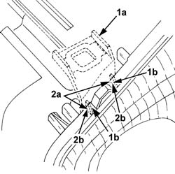
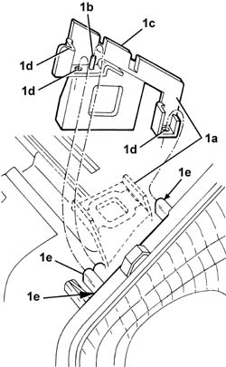
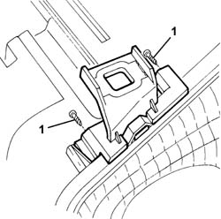

5540B84 Upper BRACKET fastening (one), front light cluster left or right, to the bodyshell - Replace. with light cluster removed
- Path
- Procedures > 55 ELECTRICAL EQUIPMENT > 5540 EXTERIOR LIGHTING > 5540B headlamps > 5540B84 Upper BRACKET fastening (one), front light cluster left or right, to the bodyshell - Replace. with light cluster removed
- Kind
- repair procedure (removal / refitting; the operation number is the code)
- Applies to
- all engines; all production periods
- Interactive page
- https://sloeber94.github.io/elrnDB-a147/en/#/3025557
Applies to: all engines; all production periods
1. Remove the damaged bracket (1a) and reinforcements (1b). 2 Level attachment surfaces (2a) and (2b).

Applies to: all engines; all production periods
1. Place the new bracket (1a) in its housing and ensure it is correctly fitted to the light cluster. In particular, check that pin (1b) and tab (1c) fit into their respective seats on the light cluster; check that surfaces (1d) are in contact with the relevant light cluster surfaces (1e).

Applies to: all engines; all production periods
1. Tighten the bolts so that the bracket is tightly fitted to the light cluster.
